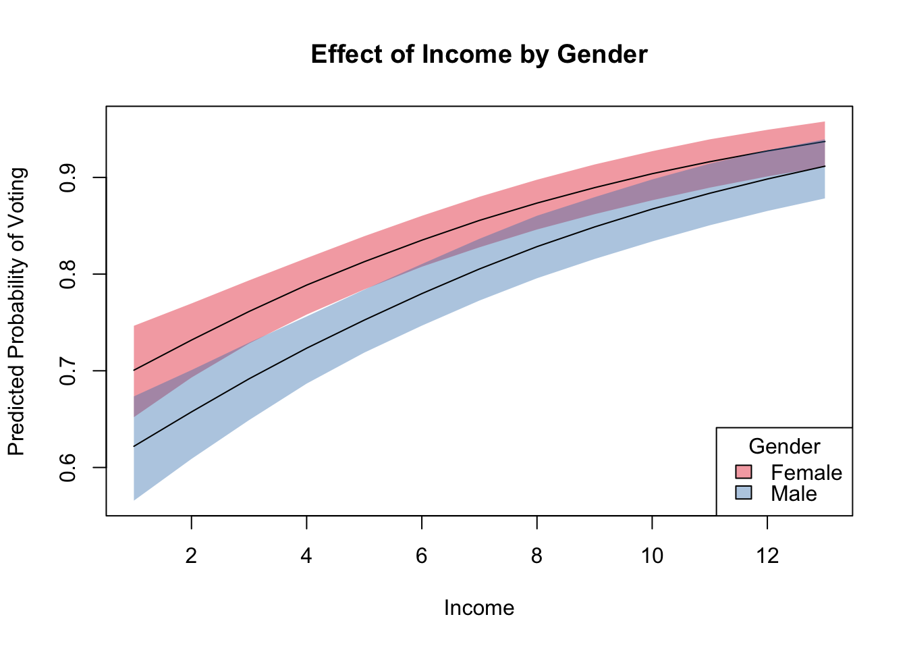

library(foreign)
library(regsim)bes <- read.dta("http://uclspp.github.io/PUBLG100/data/bes.dta")
bes$Gender <- factor(bes$Gender, levels = c(0, 1), labels = c("Female", "Male"))model <- glm(Turnout ~ Income + polinfoindex + Influence + Gender + Age +
edu15 + edu17 + edu18 + edu19plus + in_school + in_uni,
family = binomial,
data = bes)
summary(model)##
## Call:
## glm(formula = Turnout ~ Income + polinfoindex + Influence + Gender +
## Age + edu15 + edu17 + edu18 + edu19plus + in_school + in_uni,
## family = binomial, data = bes)
##
## Deviance Residuals:
## Min 1Q Median 3Q Max
## -3.0011 -0.6358 0.4995 0.7267 2.0876
##
## Coefficients:
## Estimate Std. Error z value Pr(>|z|)
## (Intercept) -3.90484 0.22364 -17.461 < 2e-16 ***
## Income 0.15397 0.02138 7.201 5.96e-13 ***
## polinfoindex 0.25066 0.02424 10.339 < 2e-16 ***
## Influence 0.21015 0.01930 10.889 < 2e-16 ***
## GenderMale -0.35511 0.08203 -4.329 1.50e-05 ***
## Age 0.04873 0.00313 15.567 < 2e-16 ***
## edu15 -0.33626 0.11213 -2.999 0.00271 **
## edu17 0.35910 0.15907 2.257 0.02398 *
## edu18 0.14084 0.15221 0.925 0.35479
## edu19plus 0.01483 0.12997 0.114 0.90914
## in_school 1.12978 0.40270 2.805 0.00502 **
## in_uni -0.05110 0.27029 -0.189 0.85006
## ---
## Signif. codes: 0 '***' 0.001 '**' 0.01 '*' 0.05 '.' 0.1 ' ' 1
##
## (Dispersion parameter for binomial family taken to be 1)
##
## Null deviance: 4763.0 on 4160 degrees of freedom
## Residual deviance: 3979.9 on 4149 degrees of freedom
## (630 observations deleted due to missingness)
## AIC: 4003.9
##
## Number of Fisher Scoring iterations: 5x <- list(Gender = levels(bes$Gender))
sim <- regsim(model, x)
summary(sim)## Profile 1
## Gender Female
## Income 5.321557
## polinfoindex 5.409277
## Influence 3.608508
## Age 50.91853
## edu15 0
## edu17 0
## edu18 0
## edu19plus 0
## in_school 0.008061408
## in_uni 0
##
## 2.5% 50% 97.5%
## p1 0.7930571 0.8193284 0.8449907
## --------------------------------
##
## Profile 2
## Gender Male
## Income 5.321557
## polinfoindex 5.409277
## Influence 3.608508
## Age 50.91853
## edu15 0
## edu17 0
## edu18 0
## edu19plus 0
## in_school 0.008061408
## in_uni 0
##
## 2.5% 50% 97.5%
## p2 0.7286079 0.7613495 0.7921563
## --------------------------------
##
## First Differences:
##
## 2.5% 50% 97.5%
## fd -0.08578415 -0.05678465 -0.03106922x <- list(Gender = levels(bes$Gender), Income = 1:13)
sim <- regsim(model, x)plot(sim, ~Income + Gender,
ylab = "Predicted Probability of Voting",
main = "Effect of Income by Gender")